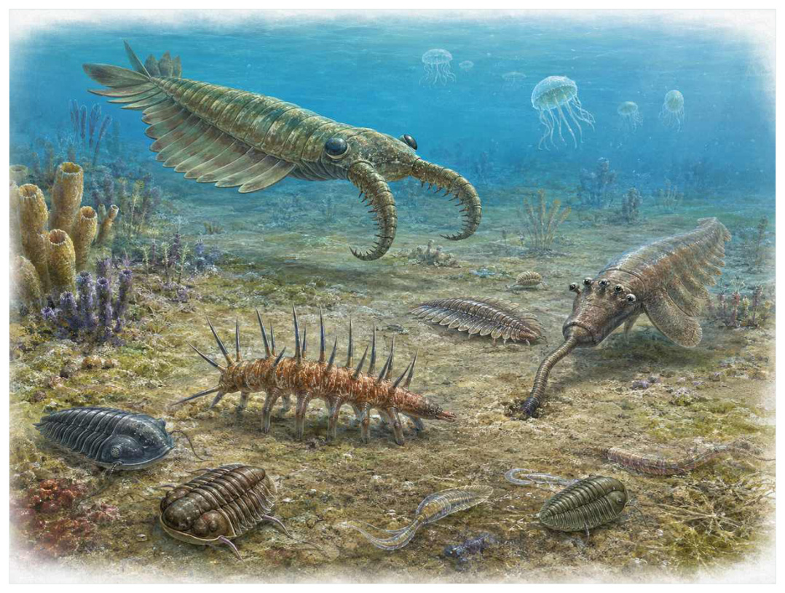

第04篇 · 寒武纪：动物身体方案的大爆发 · 第 10 章
寒武纪大爆发到底‘爆’在哪里
本篇主题:寒武纪：动物身体方案的大爆发
捕食、感觉、运动和硬组织共同重塑海洋。

本章科学复原配图 （用于呈现结构与生态关系, 不替代化石照片、测量数据与系统发育证据。）
这一章进入约5.41亿至5.20亿年前为核心阶段。没有任何生物预知下一时代，所有性状都只能在当时的资源、天敌和繁殖条件下接受筛选。寒武纪大爆发是动物形态、生态角色和化石可见度的快速增加，而不是生命在某一天突然出现。基因调控工具、氧环境、发育尺度、捕食压力、矿化和保存窗口共同作用。许多动物干群在此时出现，现代门类的冠群并非全部立即齐备。
进入这个时代
生态系统的真实声音不是巨兽咆哮，而是持续的摄食、分解、搬运和繁殖。每一具尸体、每一层落叶和每一次沉积扰动都会重新分配资源。浅海大陆架上，沉积物不再保持完整微生物席。会钻洞的蠕虫翻动海底，带眼和附肢的节肢动物追逐猎物，软体动物和腕足动物附着或爬行，悬浮颗粒被不同高度的滤食者截取。
在“寒武纪大爆发到底‘爆’在哪里”所覆盖的时间里，不能把地理与气候当作固定背景。海陆位置、海平面、河流或植被结构会改变资源可达性，同一性状在不同地区可能得到完全相反的选择结果。
以寒武纪大爆发到底‘爆’在哪里为例，物种数量并不等于生态功能。一个群落即使仍有许多物种，只要初级生产、授粉、礁体建造或大型植食等关键功能消失，食物网也会表现为深度崩溃。反过来，少数机会型物种高丰度并不代表系统已经恢复。在本章中，这一约束具体落在“捕食者提高猎物识别、运动和防护的选择压力”这条关系上。
再从约5.41亿至5.20亿年前为核心阶段的时间尺度看，旧结构被重新利用是宏演化的常见路径。自然选择无法从零绘图，只能修改已有骨骼、膜、基因调控和生活史。后来承担新功能的结构，往往最初因完全不同的局部收益而扩散。 它与“模块化附肢”共同决定了后续变化可以沿哪些路径发生。
生态系统如何运转
理解“捕食者提高猎物识别、运动和防护的选择压力”需要区分个体事件与长期压力。偶然一次捕食只改变个体命运，持续数千代的稳定关系才可能推动牙齿、外壳、感觉器官或生活史发生方向性变化。
围绕“捕食者提高猎物识别、运动和防护的选择压力”，这种关系没有永恒赢家。收益随密度和环境改变：防御越常见，攻击专门化的价值越高；资源越稀少，维持昂贵结构的代价越大。化石记录中的扩张与衰退，常是这种动态平衡被外部事件打破的结果。 对寒武纪大爆发到底‘爆’在哪里而言，这一后果还会与“掘穴扩大沉积物内部生态空间”相互放大或抵消。
“掘穴扩大沉积物内部生态空间”还会改变可利用空间。一个支系若能进入新的水深、植被高度或沉积层，竞争会暂时减弱；随后追随者、捕食者和寄生者又会把新空间变成新的互动网络。
围绕“掘穴扩大沉积物内部生态空间”，它的长期后果通常通过幼体和繁殖体现。成年个体即使能抵抗一次危机，只要巢址、配子、幼体食物或成长季节被破坏，种群仍会在数代内下降。 对寒武纪大爆发到底‘爆’在哪里而言，这一后果还会与“硬组织使身体更耐攻击，也显著提高化石保存概率”相互放大或抵消。
把“硬组织使身体更耐攻击，也显著提高化石保存概率”放进食物网，可以看到它不是孤立行为。它会影响种群密度、栖息地使用和尸体进入分解链的速度，并把后果传给并未直接参与互动的物种。
围绕“硬组织使身体更耐攻击，也显著提高化石保存概率”，还要考虑空间异质性。一项在浅海、河谷或林冠有效的策略，移到深水、干旱内陆或开阔地便可能失去优势。因此同一支系常出现区域性扩张，而不是全球同步取代。 对寒武纪大爆发到底‘爆’在哪里而言，这一后果还会与“捕食者提高猎物识别、运动和防护的选择压力”相互放大或抵消。
关键演化创新
在“寒武纪大爆发到底‘爆’在哪里”中，围绕“模块化附肢”，这一结构的历史应按性状拆开。支撑、感觉、供能和控制往往不是同时成熟，化石会显示镶嵌状态：某一部分已接近后来的形态，其他部分仍保留祖征。 它首先需要在约5.41亿至5.20亿年前为核心阶段的生态条件下产生可测量收益。
就“模块化附肢”而言，化石能较可靠地记录硬组织形态，却很少直接保留基因调控与短时行为。因此结构出现通常可信，最初用途和选择路径则应按证据标为主流解释或合理推测。 本章把它与“集中神经与感觉器官”并列，是为了显示复杂性状往往依赖多部分协同。
在“寒武纪大爆发到底‘爆’在哪里”中，围绕“集中神经与感觉器官”，“集中神经与感觉器官”是本章的重要演化创新。创新并不等于某一代突然长出完整器官，它通常由旧结构的尺寸、连接、材料和表达时序逐步变化，并在每个中间阶段承担可用功能。 它首先需要在约5.41亿至5.20亿年前为核心阶段的生态条件下产生可测量收益。
就“集中神经与感觉器官”而言，其宏观影响往往滞后于结构起源。一个创新可以先在小型、稀少支系中存在数百万年，直到环境变化或竞争者灭绝后才迅速扩张；“出现”和“成为主导”是两个不同事件。 本章把它与“矿化外骨骼”并列，是为了显示复杂性状往往依赖多部分协同。
在“寒武纪大爆发到底‘爆’在哪里”中，围绕“矿化外骨骼”，这一结构的历史应按性状拆开。支撑、感觉、供能和控制往往不是同时成熟，化石会显示镶嵌状态：某一部分已接近后来的形态，其他部分仍保留祖征。 它首先需要在约5.41亿至5.20亿年前为核心阶段的生态条件下产生可测量收益。
就“矿化外骨骼”而言，这也提醒我们不要寻找单一关键基因。复杂性状由多个组织和调控网络协调，改变任何一环都可能产生不同结果，演化路径因此呈树状而非直线。 本章把它与“模块化附肢”并列，是为了显示复杂性状往往依赖多部分协同。
生命群像：把物种放回生态网络
奇虾（Anomalocaris canadensis）
奇虾（Anomalocaris canadensis）存在于中寒武世。现有材料显示其大小约约半米至一米，估计随物种变化，生态位置接近大型游泳捕食者或捕食兼食腐者。前附肢、圆形口器和侧叶构成与现代节肢动物不同的组合让它成为理解本章主题的合适案例，但不意味着同一类群所有成员都采用相同策略。
对奇虾而言，相似环境可能让远亲出现相近轮廓，但内部结构会保留祖先限制。比较它与现代类比时，应只借用可检验的功能，不把现代动物的行为、社会制度或代谢水平整套复制到古生物身上。 这使“前附肢、圆形口器和侧叶构成与现代节肢动物不同的组合”不能脱离其大型游泳捕食者或捕食兼食腐者角色来理解。
现有认识建立在不同放射齿类食性差异大，不能把所有奇虾都描述成咬碎硬壳的超级捕食者之上。古生物学的可信度不是来自一件戏剧化标本，而是来自多件标本、多个地点和不同方法得到相容结果。新发现若改变比例或分类，并非此前研究毫无价值，而是证据边界被重新画清。
由奇虾这个案例看，从生态尺度看，它与本章其他成员共同维持一张网络。任何“最强”排名都会遗漏资源供应、幼体死亡、疾病和气候脉冲；真正决定长期成功的是种群能否在波动中不断完成繁殖。 它在中寒武世留下的记录，因此同时是第10章所讨论的形态史和生态史的一部分。
怪诞虫（Hallucigenia sparsa）
在中寒武世，怪诞虫（Hallucigenia sparsa）以约约1至5厘米的身体参与食物网。它不是孤立的“明星生物”，而是海底爬行、可能取食小颗粒或有机物；背部成对长刺与腹部柔软腿显示叶足动物身体方案决定它能利用哪些资源，也决定必须承担哪些成本。
对怪诞虫而言，它既可能是捕食者、植食者或工程者，也同时是其他生物的猎物、竞争者和分解资源。一次取食只是一瞬，长期生态影响来自成千上万个体反复搬运营养、改变植被或扰动沉积物。体型越大，这种工程效应通常越明显，但恢复速度也常越慢。 这使“背部成对长刺与腹部柔软腿显示叶足动物身体方案”不能脱离其海底爬行、可能取食小颗粒或有机物角色来理解。
支持该解释的材料包括早期复原曾上下和前后颠倒，后续头部和爪结构改变了认识。若不同证据出现冲突，应优先报告范围而不是强行给出单值。例如体长会随参照类群变化，运动能力会随软组织假设变化，系统位置也会随新增性状重新计算。
由怪诞虫这个案例看，它也展示专门化的双面性：结构在稳定环境中提高效率，却可能在气候、食物或竞争格局突变时限制转向。灭绝不是对设计的道德评分，而是性状、地理范围和偶然事件相遇后的历史结果。 它在中寒武世留下的记录，因此同时是第10章所讨论的形态史和生态史的一部分。
欧巴宾海蝎（Opabinia regalis）
认识欧巴宾海蝎（Opabinia regalis）要先放弃静态骨架印象。它生活在中寒武世，约约4至7厘米，日常任务是作为游泳或近底活动的小型捕食者维持能量与繁殖。五只眼、可弯曲吻和尾扇使其成为干群节肢动物经典代表只是这一整套生活史中最容易化石化的部分。
对欧巴宾海蝎而言，成年体型往往主导复原，但幼体可能使用完全不同的食物和栖息地。若成长阶段跨越多个生态位，种群就同时依赖多套环境；其中任一环节中断都可能导致长期衰退。化石骨床的年龄结构因此比单具最大标本更能说明生态。 这使“五只眼、可弯曲吻和尾扇使其成为干群节肢动物经典代表”不能脱离其游泳或近底活动的小型捕食者角色来理解。
我们之所以能够作出上述判断，主要因为口器和附肢的同源关系仍随系统分析调整。单一结构通常有多种功能解释，所以还要查看磨损、病理、肌肉附着、沉积环境和近缘比较。计算模型能排除不可能姿势，却不能自动恢复没有保存的软组织。
由欧巴宾海蝎这个案例看，面对仍有争议的细节，负责任的复原不是停止讲述，而是标注证据等级。形态、年代和亲缘可较确定，具体姿势、叫声、求偶和群猎则按材料降级；新标本会在这些边界内继续改写认识。 它在中寒武世留下的记录，因此同时是第10章所讨论的形态史和生态史的一部分。
马尔三叶形虫（Marrella splendens）
马尔三叶形虫（Marrella splendens）生活在中寒武世，已知体型约为约2厘米。它在群落中的角色可概括为近底游动、食腐或滤食。最值得观察的结构是头部刺与多对双肢型附肢展示早期节肢动物多样化。这些结构不是为了后来时代而准备，而是在当时直接影响摄食、运动、防御或繁殖。
对马尔三叶形虫而言，这种生活方式还会反向塑造环境。摄食改变植物或猎物结构，足迹和掘穴改变沉积，尸体和排泄物把营养集中到局部。生态位不是它进入的固定房间，而是它与其他生物共同建造并持续修改的关系网络。 这使“头部刺与多对双肢型附肢展示早期节肢动物多样化”不能脱离其近底游动、食腐或滤食角色来理解。
其复原依赖它不是三叶虫，生态功能主要由附肢和沉积环境推断。年代和保存形态通常属于较强证据，体重、速度、颜色和社会行为则需要额外假设。书中把这些层次拆开，是为了让读者知道哪些可视为事实，哪些仍应等待更多材料。
由马尔三叶形虫这个案例看，它不是祖先链条上必须跨过的一格。演化树中同时存在许多近缘支系，只有少数留下后代；旁支化石同样关键，因为它们显示某组性状出现的顺序和可行范围。 它在中寒武世留下的记录，因此同时是第10章所讨论的形态史和生态史的一部分。
威瓦西虫（Wiwaxia corrugata）
在这一章的生命群像里，威瓦西虫（Wiwaxiacorrugata）不能只当作图鉴名称。它出现于中寒武世，体型大约约1至5厘米，主要生活方式是海底爬行的刮食者；鳞片和背刺包裹软体，口器与软体动物或环节动物关系引发长期争论则说明身体怎样围绕这一生活方式进行组合。
对威瓦西虫而言，相似环境可能让远亲出现相近轮廓，但内部结构会保留祖先限制。比较它与现代类比时，应只借用可检验的功能，不把现代动物的行为、社会制度或代谢水平整套复制到古生物身上。 这使“鳞片和背刺包裹软体，口器与软体动物或环节动物关系引发长期争论”不能脱离其海底爬行的刮食者角色来理解。
科学家并未直接看见它生活，依据是目前多被放在冠轮动物内部，但精确位置仍依性状解释。现代类比可以帮助提出可检验模型，却不能取代化石；越具体的短时行为，越需要痕迹、内容物或重复病理等直接线索。
由威瓦西虫这个案例看，这个案例还提醒我们，亲缘和生态角色是两件事。近亲可以因资源分化而外形迥异，远亲也能因相似压力而趋同。把它放在演化树和食物网两个坐标中，才不会误写成线性进步。 它在中寒武世留下的记录，因此同时是第10章所讨论的形态史和生态史的一部分。
因果链：环境、生态与性状
种群层面的成功还要考虑波动，而不仅是平均状态。在资源丰富年份，“集中神经与感觉器官”带来的高性能可能迅速增加个体数；在低谷年份，维持该结构的成本又会放大死亡。若怪诞虫拥有较广食谱或可迁移，便可能跨过低谷；若其背部成对长刺与腹部柔软腿显示叶足动物身体方案高度依赖单一环境，恢复就更困难。化石群落中的丰度峰值、体型变化和地理收缩能为这种“繁荣—压力—恢复”循环提供线索，但必须与采样偏差区分。对约5.41亿至5.20亿年前为核心阶段的任何稳态描述，都只是长期波动中被岩层保存的一小段。
本章的因果链最终落在繁殖上。“掘穴扩大沉积物内部生态空间”改变个体获得资源和避开风险的方式，“模块化附肢”改变身体能做什么，但只有这些差异持续影响配子、胚胎、幼体和成体留下后代的概率，演化频率才会跨世代变化。奇虾和怪诞虫的化石常让人关注尺寸或武器，然而巢、蛋、芽孢、孢粉、幼体壳和成长线往往更接近选择真正发生的位置。理解寒武纪大爆发到底‘爆’在哪里，因此要把最壮观的成年结构重新接回完整生活史。
把“模块化附肢”拆成成本与收益，可以避免把演化创新写成无条件升级。它可能扩大摄食、运动或繁殖的边界，却要付出组织材料、发育协调和日常维持的代价；“集中神经与感觉器官”又会改变这笔账在不同生命阶段的分配。对奇虾而言，前附肢、圆形口器和侧叶构成与现代节肢动物不同的组合在成年阶段或许十分醒目，但种群能否延续仍取决于幼体是否能找到食物、是否有安全的生长场所以及环境波动后是否保留繁殖者。化石往往偏爱成年硬组织，因此书写约5.41亿至5.20亿年前为核心阶段时必须主动补上这些不易保存却决定长期命运的环节。
从时间顺序看，“模块化附肢”的最早记录不等于它立即改写生态系统。结构可能先以小幅变异出现在稀少支系中，经历很长的试验期，直到“捕食者提高猎物识别、运动和防护的选择压力”所代表的资源条件或竞争格局改变，才出现可见的辐射。反过来，一个支系在化石记录中突然繁盛，也不证明关键结构刚刚产生；保存窗口打开、地理扩散或生态位释放都能造成类似图景。因此讨论约5.41亿至5.20亿年前为核心阶段的创新时，本章把“首次出现”“功能完善”“多样化”和“成为生态主导”分成四个问题，避免用一个日期替代整段历史。
在约5.41亿至5.20亿年前为核心阶段，身体不是若干部件的简单相加。“模块化附肢”只有与“矿化外骨骼”在供能、控制和发育上兼容，才可能稳定遗传；局部性能提高若超过呼吸、循环或支撑能力，整体反而失效。欧巴宾海蝎的五只眼、可弯曲吻和尾扇使其成为干群节肢动物经典代表因此应放进完整身体比例中解释，而不是把某一器官单独夸大。生物力学模型可以估算受力和运动范围，组织学能限制生长速度，近缘比较能提示同源关系；三者相互校验，才有可能从静态化石走向一个能够活着完成日常活动的动物或植物。
时代横截面：个体、种群与证据
证据强度也应逐句区分。小壳化石记录早期矿化碎片若直接记录形态或行为痕迹，可把某些可能性排除；澄江和伯吉斯页岩保存软组织若来自模型或现代类比，则通常提供范围而非唯一答案。对欧巴宾海蝎的五只眼、可弯曲吻和尾扇使其成为干群节肢动物经典代表，我们也许能高可信地描述结构，却只能以主流解释讨论功能，以合理推测讨论日常行为。把层级写出来不会削弱故事，反而让读者知道未来新发现最可能改动哪一部分。
把结构看作模块，可以解释为什么过渡类型常显得“新旧并存”。奇虾的前附肢、圆形口器和侧叶构成与现代节肢动物不同的组合可能已经接近后来状态，而呼吸、繁殖或运动的其他部分仍保留祖征；怪诞虫可能采用另一种组合达到相似功能。演化不要求所有部件同步改变，只要求每个阶段的完整个体能够生活和繁殖。正因如此，真实谱系会产生旁支、回退和多次独立试验，而不是教科书式直梯。
再把欧巴宾海蝎加入横截面，群落关系会从两者比较变成网络。它作为游泳或近底活动的小型捕食者，通过五只眼、可弯曲吻和尾扇使其成为干群节肢动物经典代表连接资源与其他消费者；其数量变化可能同时影响奇虾和怪诞虫，甚至改变分解链和营养循环。这样的间接效应很少能由一具骨架直接证明，却可以从物种共现、丰度、痕迹化石和环境指标中受到约束。寒武纪大爆发到底‘爆’在哪里的生态复原因此需要群落数据，而不只是著名标本的精细解剖。
地理同样会拆散看似整齐的时代标签。约5.41亿至5.20亿年前为核心阶段并不是全球同时拥有同一种气候与群落：海盆深浅、纬度、山脉、河流和大陆隔离会让奇虾、怪诞虫与欧巴宾海蝎的分布错开。一个支系可能在某地区衰退、在另一地区成为避难所；后来扩散又会造成化石记录中的“重新出现”。因此本章的代表物种用于说明机制，而不意味着它们都在同一地点同一时刻相遇。
“谁取代了谁”常把复杂过程压成单线叙事。在寒武纪大爆发到底‘爆’在哪里中，即使怪诞虫在某层位后减少、欧巴宾海蝎随后增加，也可能是二者分别响应气候或栖息地，而不是直接竞争导致淘汰。需要检查时间误差、地理重叠和资源相似度；只有三者都支持，替代关系才更可信。更多时候，生态系统通过功能重新组合过渡，旧支系与新支系会长期并存。
科学家为什么这样判断
“小壳化石记录早期矿化碎片”还需要与年代学绑定。只有事件先后关系可靠，才能讨论因果；若环境变化和生物响应的误差范围大量重叠，就应表述为相关或可能机制，而不是宣布已经证明。
“澄江和伯吉斯页岩保存软组织”最有价值的地方，是它能排除某些流行复原。关节不允许的姿势、承重无法支持的速度、与沉积环境冲突的生活方式，都可以被证据淘汰；剩余模型仍可能不止一个。
“痕迹化石揭示实体化石未保存的行为升级”提供的是一类约束而非完整录像。它可能精确记录某一瞬间，却未必代表全年或整个物种；也可能反映长期平均，却无法指出单次行为。把不同时间尺度的证据组合，才能重建生态过程。
在“寒武纪大爆发到底‘爆’在哪里”这一问题上，把上述方法合在一起，研究者才能从残缺材料走向受约束的复原。任何一条证据都可能受到成岩、污染、样本量或现代类比的限制；结论越具体，越需要多条独立证据指向同一方向，并与约5.41亿至5.20亿年前为核心阶段的地层背景相容。
过去的图景与今天的证据
‘所有动物门都在寒武纪瞬间出现’是误导。分子钟通常把若干分化推向更早，而寒武纪记录的是身体差异变大、数量增加和生态互动强化。爆发持续数千万年，并且不同支系的节奏不同。
围绕“寒武纪大爆发到底‘爆’在哪里”，旧复原并不总是彻底错误。它可能正确抓住亲缘或基本功能，却在姿势、比例和生态上被新标本修订。比较“过去认为”和“现在更支持”，能看见证据如何逐层替换想象。
对约5.41亿至5.20亿年前为核心阶段的材料而言，这里的争论并非一方相信科学、另一方拒绝科学，而是不同材料对模型的约束力度不同。旧结论可能建立在少量标本或错误现代类比上，新技术增加性状后会改变最合理解释。修正是研究正常运行的结果。
跨尺度观察
灭绝选择性：危机不会随机删除名单。分布狭窄、食性单一、体型大、成熟慢或依赖特定栖息地的支系往往风险更高，但每次事件的杀伤机制不同，规律只能作为概率而非绝对法则。在“寒武纪大爆发到底‘爆’在哪里”中，这一尺度具体连接了“捕食者提高猎物识别、运动和防护的选择压力”与“模块化附肢”，因而不能只从单个成年标本判断。
恢复不是复原：大灭绝后的多样性回升并不意味着旧生态返回。幸存者会以新组合接管功能，某些空缺可能数百万年无人填补，另一些由远亲迅速占据。恢复速度应分别看物种数、身体大小和食物网复杂度。 在“寒武纪大爆发到底‘爆’在哪里”中，这一尺度具体连接了“掘穴扩大沉积物内部生态空间”与“集中神经与感觉器官”，因而不能只从单个成年标本判断。
空间镶嵌：同一地质时期包含多个大陆、纬度和海盆。地区之间可因山脉、海峡和洋流形成不同群落，局部化石库不能代表全球平均。比较多个地点能区分真正的全球事件与区域替换。 在“寒武纪大爆发到底‘爆’在哪里”中，这一尺度具体连接了“硬组织使身体更耐攻击，也显著提高化石保存概率”与“矿化外骨骼”，因而不能只从单个成年标本判断。
通向下一个时代
从本章走向下一阶段时，需要保留的不是一串物种名，而是一个因果链：环境改变可用能量与栖息地，生态关系筛选性状，性状又反过来改造环境。要理解这场转变，不能只数新门类，还要进入具体生态系统，观察奇虾、三叶虫、蠕虫和早期脊索动物怎样彼此塑造。
本章精选来源
- [R23] Fedonkin, M. A. et al. The Rise of Animals: Evolution and Diversification of the Kingdom Animalia. Johns Hopkins University Press, 2007.
- [R24] Darroch, S. A. F. et al. A mixed Ediacaran-metazoan assemblage from the Zaris Sub-basin, Namibia. Palaeogeography, Palaeoclimatology, Palaeoecology 459, 198-208 (2016).
- [R25] Shore, A. J. et al. Ediacaran metazoan reveals lophotrochozoan affinity and deepens root of Cambrian explosion. Science Advances 7, eabf2933 (2021).
- [R26] Budd, G. E. & Jensen, S. A critical reappraisal of the fossil record of the bilaterian phyla. Biological Reviews 75, 253-295 (2000).
- [R27] Hou, X.-G. et al. The Cambrian Fossils of Chengjiang, China: The Flowering of Early Animal Life, 2nd ed. Wiley Blackwell, 2017.